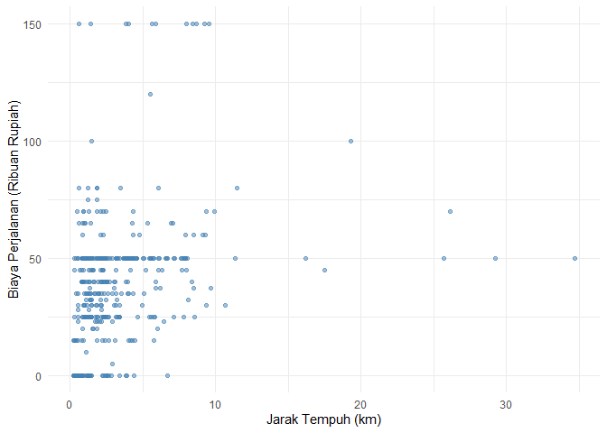
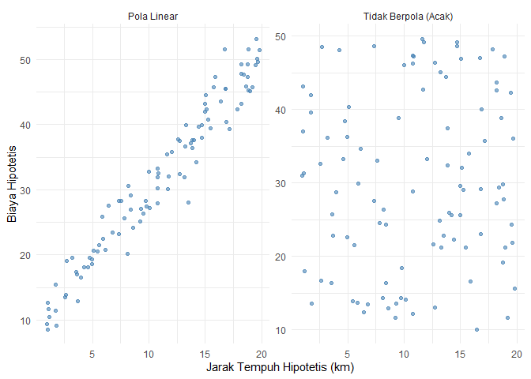
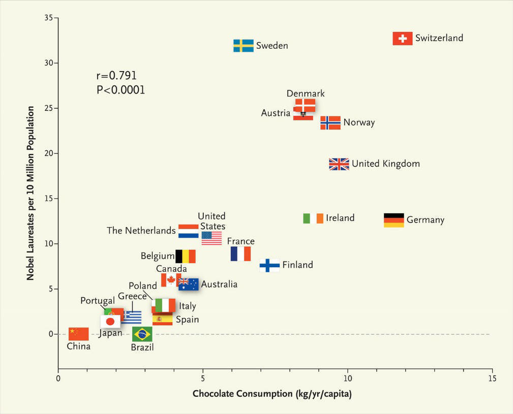

Bab 9 Korelasi Antarvariabel Nominal
Capaian Pembelajaran
Setelah mempelajari bab ini, Anda diharapkan mampu memaknai hasil analisis korelasi pasangan variabel bertingkat pengukuran nominal dengan tepat STP-9.1
9.1 Konsep Dasar Analisis Bivariat
Mulai bab ini kita akan bergeser dari analisis statistik univariat, analisis statistik yang hanya memperhatikan satu variabel saja, ke analisis statistik bivariat, yaitu analisis statistik yang memperhatikan dua variabel secara bersamaan.
Beberapa kasus yang sudah kita bahas dalam bab-bab sebelumnya yang mencerminkan analisis univariat adalah sebagai berikut.
| Bab | Pembahasan | Variabel |
|---|---|---|
| 3 | Menghitung persentase/proporsi mahasiswa pengguna sepeda motor ke kampus | Pengguna sepeda motor ke kampus |
| 4 | Memvisualkan sebaran moda yang digunakan mahasiswa ke kampus | Moda yang digunakan mahasiswa ke kampus |
| 5 | Menghitung nilai standar untuk biaya perjalanan mahasiswa | Biaya perjalanan mahasiswa |
| 6 | Menghitung interval kepercayaan untuk parameter rata-rata jarak ke kampus populasi mahasiswa Itera | Jarak tempuh tempat tinggal ke kampus |
| 7 | Pengujian hipotesis skor kepuasan program MBG | Skor kepuasan program MBG |
Dari Tabel 9.1, dapat kita lihat bahwa pada bab-bab sebelumnya, kita hanya menganalisis satu variabel saja. Namun, mulai bab ini, kita akan menganalisis dua variabel secara bersamaan.
9.2 Konsep Dasar Analisis Asosiasi
Ketika kita menganalisis dua variabel secara bersamaan, kita akan berfokus pada hubungan atau asosiasi antar kedua variabel tersebut. Kita akan mempelajari mengidentifikasi hubungan/asosiasi pada sepasang variabel dan apa saja bentuk hubungan/asosiasi tersebut.
9.2.1 Mengidentifikasi Asosiasi Sepasang Variabel Secara Empiris
Bagaimana mengidentifikasi adanya hubungan/asosiasi pada sepasang variabel? Kita bisa memperhatikan tiga karakteristik hubungan berikut: kekuatan, arah, dan pola hubungan. Ketiga karakteristik ini, lagi-lagi, erat kaitannya dengan tingkat pengukuran variabel. Mari kita simak ulasan berikut mengenai masing-masing karakteristik secara empiris (tampak secara langsung) (de Vaus 2014).
9.2.1.1 Kekuatan Hubungan
Kekuatan hubungan mengacu pada seberapa besar besarnya perbedaan yang teramati pada distribusi nilai variabel kedua ketika kita membandingkan nilai variabel pertama. Semakin besar perbedaan tersebut, semakin kuat hubungan antar kedua variabel. Sebaliknya, semakin kecil perbedaan tersebut, semakin lemah hubungan antar kedua variabel.
Studi Kasus: Mengukur Kekuatan
Mari kita amati hubungan antara asal Fakultas secara umum dengan kebiasaan Penggunaan Transportasi Umum menggunakan tabel silang (contingency table). Kekuatan hubungan dapat dievaluasi secara manual dengan melihat besarnya selisih angka persentase pada selisih kolom antar-baris yang berlawanan.
Pertama, mari kita lihat contoh data hipotetis yang mengindikasikan hubungan lemah:
| Fakultas | Sering | Jarang |
|---|---|---|
| Fakultas A | 45% | 55% |
| Fakultas B | 48% | 52% |
| Fakultas C | 46% | 54% |
Pada Tabel 9.2, perbedaan persentase untuk kelompok “Sering” di antara ketiga fakultas amatlah berdempetan (berkisar sempit antara \(45\%-48\%\)). Nilai yang saling menyerupai dan tanpa selisih riil ini menyatakan bahwa ciri kebiasaan fakultas nyaris tidak membuat pengaruh yang jelas terhadap penggunaan transportasi. Dapat disimpulkan, hubungan ini diklasifikasikan sebagai asosiasi yang lemah.
Sebagai perbandingan, silakan bandingkan dengan susunan skenario tabel di bawah ini yang mengilustrasikan kondisi asosiasi kuat:
| Fakultas | Sering | Jarang |
|---|---|---|
| Fakultas A | 90% | 10% |
| Fakultas B | 20% | 80% |
| Fakultas C | 50% | 50% |
Pada Tabel 9.3, kita bisa menarik garis selisih persentase yang teramat ekstrem lintas fakultas (Fakultas A mencapai sentuhan angka \(90\%\), sementara Fakultas B jeblok di \(20\%\)). Rentang kesenjangan distribusi yang sangat mencolok secara visual pada tabel kontingensi inilah yang menjadi indikator empirik sahih dari suatu korelasi asimetris yang kuat.
9.2.1.2 Arah Hubungan
Arah hubungan mengacu pada arah perubahan yang teramati pada distribusi nilai variabel kedua ketika kita membandingkan nilai variabel pertama. Arah hubungan bisa berupa positif yang berarti searah atau negatif yang berarti berlawanan arah. Arah hubungan positif berarti ketika nilai variabel pertama meningkat, nilai variabel kedua juga cenderung meningkat. Arah hubungan negatif berarti ketika nilai variabel pertama meningkat, nilai variabel kedua cenderung menurun.
Studi Kasus: Arah Hubungan
Arah hubungan hanya dapat ditentukan jika data memiliki tingkatan atau urutan logis berjenjang (besaran rasio atau skala ordinal). Mari kita cermati hubungan hipotetis antara jenjang Kepadatan Kuliah dengan Tingkat Stres mahasiswa. Jika kita melihat persentase dalam sel tabel silang, arahnya tercermin secara teratur dari mana letak angka puncaknya berkonsentrasi membelah baris dan kolom:
| Kepadatan Kuliah | Stres Rendah | Stres Sedang | Stres Tinggi |
|---|---|---|---|
| Rendah | 70% | 20% | 10% |
| Sedang | 20% | 60% | 20% |
| Tinggi | 10% | 20% | 70% |
Di Tabel 9.4 untuk skenario Arah Positif, angka tertinggi (\(70\%\), \(60\%\), \(70\%\)) berkumpul mengisi sel-sel diagonal urut yang membentang dari kiri atas turun ke kanan bawah. Artinya, makin padat jadwal kuliahnya, makin tinggi pula tingkat stres yang dialami mahasiswa. Ini menandakan hubungan yang searah antara kepadatan jadwal kuliah dengan tingkat stres mahasiswa.
Sebaliknya, mari kita observasi bila pilar angkanya diputarbalik menata sebaran negatif:
| Kepadatan Kuliah | Stres Rendah | Stres Sedang | Stres Tinggi |
|---|---|---|---|
| Rendah | 10% | 20% | 70% |
| Sedang | 20% | 60% | 20% |
| Tinggi | 70% | 20% | 10% |
Dalam skenario di Tabel 9.5, konsentrasi datanya menumpuk membentuk diagonal terbalik. Hal ini diartikan makin padat jadwal kuliah, tingkat stres cenderung rendah. Ini menandakan hubungan yang berlawanan arah sehingga dikatakan memiliki arah yang negatif.
9.2.1.3 Pola Hubungan
Pola hubungan mengacu pada bentuk hubungan yang teramati pada distribusi nilai variabel kedua ketika kita membandingkan nilai variabel pertama. Pola hubungan bisa berupa linear atau non-linear. Pola hubungan linear berarti hubungan antar kedua variabel dapat digambarkan sebagai garis lurus. Pola hubungan non-linear berarti hubungan antar kedua variabel tidak dapat digambarkan sebagai garis lurus.
Studi Kasus: Pola Hubungan Jarak Tempuh dan Biaya Perjalanan
Untuk menjelaskan pola hubungan, mari kita gunakan variabel rasio yang sifatnya numerik kontinyu, seperti jarak.km dengan biaya.dalam.ribu2 (biaya perjalanan dalam ribuan rupiah) dari dataset mahasiswa kampus UIN Raden Intan Lampung. Sesuai kaidah analisis, scatterplot akan menyingkap bentuk formasi lintasan datanya secara visual, apakah berpola linear (membentuk garis lurus teratur) atau non-linear (berbelok-belok, misalnya kurva):

Gambar 9.1: Pola Hubungan Jarak Tempuh dan Biaya Perjalanan
Melalui Gambar 9.1, sebaran titik-titik koordinatnya menampilkan konsentrasi yang membentuk sebuah lintasan terarah.
Sebagai perbandingan agar lebih mudah diidentifikasi, mari amati bentuk plot yang membentuk pola teoretis (garis lurus linear) serta kondisi yang sama sekali tidak berpola pada skenario data hipotetis berikut ini:

Gambar 9.2: Perbandingan Pola Linear dan Kondisi Tidak Berpola (Hipotetis)
Anda dapat membandingkan titik-titik sebaran kampus UINRIL pada observasi pertama dengan kedua skenario referensi di atas untuk melihat apakah grafik tersebut mencontoh wujud trend model linear yang rapi, atau malah bersifat acak. Kemampuan mendiagnosis wujud pola empirik inilah yang krusial sebelum menentukan jenis probabilitas regresi selanjutnya!
9.2.2 Identifikasi Hubungan Antar Variabel Secara Matematis
Mengidentifikasi hubungan antarvariabel secara empiris tidak selalu mudah, oleh karena itu, dikembangkan koefisien-koefisien asosiasi yang dapat menginformasikan ketiga karakteristik tersebut secara ringkas.
Secara umum, koefisien asosiasi memiliki rentang nilai antara 0 sampai dengan 1 dan tanda positif (+) atau negatif (-). Rinciannya adalah sebagai berikut:
- Semakin mendekati 1 nilainya, semakin kuat hubungan antara kedua variabel. Sebaliknya, semakin mendekati 0 nilainya, semakin lemah hubungan antara kedua variabel.
- Tanda positif (+) menunjukkan hubungan yang searah, sedangkan tanda negatif (-) menunjukkan hubungan yang berlawanan arah.
Koefisien yang menerangkan pola khusus hanya ada pada hubungan antar variabel metrik dan berbeda dengan koefisien asosiasi yang dimaksud sebelumnya. Kita akan mempelajarinya pada bab 12.
9.2.2.1 Karakteristik Hubungan dan Tingkat Pengukuran Variabel
Di subbab sebelumnya kita telah mengenal karakteristik-karakteristik yang dapat diidentifikasi dalam sebuah hubungan antara dua variabel. Karakteristik ini sangat berhubungan erat dengan tingkat pengukuran variabel-variabel yang dianalisis. Berikut adalah penjelasan mengenai perbedaan karakteristik-karakteristik hubungan yang bisa diidentifikasi berdasarkan tingkat pengukuran yang sama untuk kedua variabel.
| Tingkat.Pengukuran | Kekuatan | Arah | Pola |
|---|---|---|---|
| Nominal | ✅ | ❌ | ❌ |
| Ordinal | ✅ | ✅ | ❌ |
| Interval | ✅ | ✅ | ✅ |
| Rasio | ✅ | ✅ | ✅ |
Dari seluruh tingkat pengukuran, hanya tingkat pengukuran nominal yang tidak memiliki karakteristik arah dan pola. Ini dikarenakan sifat alami variabel nominal yang hanya berfungsi sebagai label atau kategori tanpa memiliki urutan atau nilai numerik yang dapat diinterpretasikan secara matematis. Mulai variabel ordinal dan seterusnya, arah bisa diidentifikasi, karena mulai tingkat ini urutan antar kategori sudah bisa diinterpretasikan secara logis.
Sementara itu, pola hanya bisa diidentifikasi pada tingkat pengukuran interval dan rasio, karena pola hanya bisa diidentifikasi pada nilai yang berupa angka.
Bagaimana jika dua variabel kita memiliki tingkat pengukuran yang berbeda? Kita harus melihat variabel yang tingkat pengukurannya lebih rendah. Mari simak contoh kasus berikut.
Studi Kasus: Karakteristik Hubungan Berdasarkan Tingkat Pengukuran Variabel
Perhatikan dataset contoh berikut.
| ID | Jarak | Uang_saku |
|---|---|---|
| 1 | 23 | <1 Juta rupiah |
| 2 | 12 | 2-3 Juta rupiah |
| 3 | 34 | 3-4 Juta rupiah |
| 4 | 45 | >4 Juta rupiah |
| 5 | 56 | <1 Juta rupiah |
Variabel jarak dan uang_saku memiliki tingkat pengukuran yang berbeda (rasio dan ordinal). Oleh karena itu, kita tidak dapat langsung menentukan karakteristik hubungan antara kedua variabel tersebut berdasarkan Tabel 9.6.
Oleh karena variabel yang lebih rendah tingkat pengukurannya adalah uang_saku (ordinal), maka kita perlu melakukan transformasi terlebih dahulu variabel jarak menjadi ordinal agar dapat dianalisis lebih lanjut:
| ID | Jarak | Uang_saku |
|---|---|---|
| 1 | 20-30 km | <1 Juta rupiah |
| 2 | 10-20 km | 2-3 Juta rupiah |
| 3 | 30-40 km | 3-4 Juta rupiah |
| 4 | 40-50 km | >4 Juta rupiah |
| 5 | <10 km | <1 Juta rupiah |
Dengan demikian, kita dapat mengidentifikasi karakteristik hubungan antara kedua variabel tersebut berdasarkan Tabel 9.6 yakni untuk variabel ordinal, yakni kekuatan dan arah. Koefisien asosiasinya juga berarti memiliki kisaran angka antara 0 sampai dengan 1 dan tanda positif (+) atau negatif (-).
9.2.3 Bentuk Asosiasi Sepasang Variabel
Setelah mempelajari karakteristik hubungan antarvariabel, kita perlu menguasai bentuk-bentuk asosiasi yang ada di antara kedua variabel. Penguasaan bentuk ini penting karena bentuk asosiasi tersebut sangat menentukan jenis analisis asosiasi yang akan kita gunakan selanjutnya, dan keduanya sangat berlainan satu sama lain.
Bentuk asosiasi dua variabel dapat dibagi menjadi keterkaitan atau korelasi dan pengaruh atau kausalitas.
- Keterkaitan atau korelasi adalah bentuk hubungan yang biasanya teridentifikasi secara kebetulan, setelah data dianalisis. Kekuatan, arah, dan pola yang terjadi pada dua variabel dipandang sebagai sesuatu yang terjadi secara alami dan belum bisa dijelaskan penyebabnya.
- Pengaruh atau kausalitas adalah bentuk hubungan yang terjadi karena adanya sebab dan akibat antara dua variabel tersebut. Dalam hal ini, perubahan pada satu variabel menyebabkan perubahan pada variabel lainnya. Dalam bentuk ini, kita sudah memiliki asumsi awal mengenai variabel mana yang menjadi sebab dan mana yang menjadi akibat.
Penting untuk memiliki pemahaman bahwa korelasi belum tentu sebuah kausalitas, akan tetapi kausalitas sudah pasti memiliki korelasi. Mengapa demikian? Hubungan korelasi menunjukkan indikasi adanya pengaruh antara kedua variabel tersebut. Akan tetapi, kita belum bisa mengatakan salah satu menjadi pemengaruh yang lain tanpa menelaah secara mendalam. Walaupun bisa jadi ada pengaruh di antara kedua variabel tersebut, pengaruh ini bisa jadi disebabkan oleh adanya variabel antara atau variabel pengganggu, yang disebut juga confounding variable. Simak studi kasus berikut.
Studi Kasus: Konsumsi Cokelat dan Peraih Nobel
Sebagai ilustrasi klasik nan menggelitik tentang perbedaan antara korelasi dan kausalitas, mari kita telaah sebuah temuan populer yang dipublikasikan oleh Dr. Franz Messerli pada tahun 2012 (Messerli 2012). Melalui observasinya, beliau menganalisis data statistik penduduk dari puluhan negara dan memplot korelasi antara rata-rata konsumsi cokelat per kapita (kg/tahun) dengan jumlah peraih hadiah Nobel per 10 juta penduduk.
Hasil scatterplot-nya secara mengejutkan menunjukkan bahwa terdapat korelasi linear positif yang sangat kuat (sangat signifikan) antara angka konsumsi cokelat sebuah negara dengan proporsi pemenang Nobel dari negara tersebut (Gambar 9.3). Semakin tinggi tingkat konsumsi batangan cokelat penduduk negaranya, diiringi pula dengan melesatnya jumlah peraih penghargaan Nobel (di posisi teratas diduduki oleh negara Swiss dan Swedia).

Gambar 9.3: Scatterplot Konsumsi Cokelat dan Peraih Nobel. Sumber: data.europa.eu
Namun, apakah korelasi statistik riil yang sangat kuat ini berarti bahwa memakan cokelat secara masif “menyebabkan” atau meningkatkan kecerdasan kognitif yang seketika membuat seseorang memenangkan Nobel (kausalitas)?
Tentu saja kesimpulan tersebut keliru. Kendati secara hitungan matematis keduanya berkorelasi sangat tinggi, fenomena ini kemungkinan besar hanyalah imbas dari sebuah variabel antara (confounding variable) yang “menjembatani” tingkat konsumsi coklat dan jumlah peraih penghargaan Nobel, yakni tingkat kesejahteraan sosial ekonomi makro. Negara yang makmur dan tergolong sangat maju tentu memiliki daya beli yang lebih baik terhadap komoditas tersier seperti cokelat. Di lain sisi, wujud kemakmuran finansial tersebut merupakan fondasi dasar bagi ekosistem edukasi kelas dunia dan sokongan dana riset sains yang sangat dominan, sehingga sudah sewajarnya secara terpisah berujung pada tingginya kuantitas masyarakat yang sukses meraih Nobel.
9.3 Koefisien Korelasi Variabel Nominal
Dalam bab ini kita akan mempelajari koefisien-koefisien korelasi untuk dua variabel nominal. Koefisien-koefisien yang akan kita pelajari di antaranya adalah koefisien yang termasuk ke dalam kategori berbasis chi-kuadrat (chi-square, \(\chi^2\)) dan berbasis galat (error).
Koefisien yang termasuk ke dalam kategori berbasis chi-kuadrat yang akan kita bahas di antaranya adalah koefisien phi (\(\phi\)), koefisien Cramer’s V (V), dan koefisien contingency (C). Sementara itu, koefisien yang termasuk ke dalam kategori berbasis galat (error) adalah koefisien Lambda (\(\lambda\)).
9.3.1 Koefisien Korelasi Variabel Nominal Berbasis Chi-Kuadrat (\(\chi^2\))
Chi-kuadrat (chi-square, dibaca “kai-square”) sebenarnya adalah adalah salah satu teknik statistik yang biasa digunakan untuk menganalisis hubungan antara dua variabel kategoris dengan menguji apakah perbedaan yang diamati dalam distribusi frekuensi suatu sampel dapat dijelaskan hanya oleh peluang acak (random chance), atau justru mencerminkan perbedaan yang nyata (genuine differences) dalam populasi (Ewing and Park 2020).
Karena digunakan untuk dua variabel kategoris, Uji Chi-square menggunakan tabel silang, yakni tabel yang menampilkan frekuensi objek berdasarkan dua variabel. Dalam tabel silang, berbeda dengan tabel data terstruktur, baris bukan lagi objek dan kolom bukan lagi variabel. Baik baris maupun kolom memuat kategori nilai dari seluruh variabel yang dianalisis.
Jumlah kategori dari variabel pertama akan menjadi jumlah baris, sementara jumlah kategori dari variabel kedua akan menjadi jumlah kolom. Dari situlah kita menyebutkan ukuran tabel silang sebagai “tabel silang \(b \times k\)”, dengan \(b\) adalah jumlah baris dan \(k\) adalah jumlah kolom. Sebagai contoh, jika variabel pertama memiliki 3 kategori dan variabel kedua memiliki 4 kategori, maka tabel silangnya berukuran \(3 \times 4\).
Sel-sel tabel akan memuat rangkuman nilai frekuensi yang diamati (Tabel 9.9). Dari tabel silang ini, tujuan kita adalah menganalisis frekuensi teramati (observed frequency) dan frekuensi yang diharapkan (expected frequency) untuk uji Chi-square. Perhatikan kasus berikut ini.
Studi Kasus: Tabel Silang Variabel Nominal
Korelasi antara variabel jenis.tempat.tinggal dan kendaraan.utama mahasiswa UNILA akan dianalisis pada tingkat kepercayaan 95%. Berikut adalah tabel silang dari kedua variabel tersebut.
| Jenis Tempat Tinggal | ||||||
|---|---|---|---|---|---|---|---|
Asrama | Kos bersama-sama | Kos sendiri | Rumah bersama saudara | Rumah ngontrak bersama-sama | Rumah ngontrak pribadi | Rumah pribadi/rumah keluarga | |
Jenis Kendaraan | |||||||
Berjalan kaki | 10 | 5 | 6 | 0 | 10 | 10 | 0 |
Menumpang kendaraan bermotor teman/keluarga | 0 | 3 | 1 | 0 | 1 | 0 | 3 |
Mobil pribadi | 0 | 3 | 7 | 9 | 4 | 2 | 26 |
Sepeda motor pribadi | 0 | 22 | 51 | 39 | 25 | 17 | 76 |
Transportasi daring | 0 | 10 | 16 | 9 | 7 | 6 | 16 |
Penjelasan Tabel Silang
- Baris tabel tersebut adalah kategori dari variabel
kendaraan.utama. Terdapat 5 kategori dari variabel tersebut, sehingga ada 5 baris. - Kolomnya adalah kategori dari variabel
jenis.tempat.tinggal. Terdapat 7 kategori dari variabel tersebut, sehingga ada 7 kolom. - Ukuran tabel silang ini adalah \(5 \times 7\).
9.3.2 Frekuensi Harapan dan Nilai Chi-square (\(\chi^2\))
Frekuensi harapan (expected frequency, \(f_e\)) dari tabel silang dihitung dengan persamaan berikut.
\[ f_e = \frac{\text{total baris}\times \text{total kolom}}{\text{total keseluruhan}} \tag{9.1} \]
Bersama dengan frekuensi yang teramati (observed frequency, \(f_o\)), \(f_e\) digunakan untuk menghitung nilai \(\chi^2\) sebagai berikut.
\[ \chi^2 = \sum \frac{(f_o - f_e)^2}{f_e} \tag{9.2} \]
Catatan
\(\chi^2\) pada dasarnya adalah sebuah distribusi statistik sekaligus uji hipotesis. Dengan demikian, \(\chi^2\) memiliki tabel distribusi dan juga hipotesis kosong dan alternatif. Hipotesis kosongnya adalah tidak ada hubungan antara kedua variabel, sementara hipotesis alternatifnya adalah ada hubungan antara kedua variabel.
Tabel distribusi \(\chi^2\) menampilkan nilai-nilai kritis untuk setiap derajat kebebasan (degree of freedom, \(df\)) dan tingkat signifikansi (\(\alpha\)). Derajat kebebasan adalah hasil dari perhitungan \((b-1)(k-1)\), dengan \(b\) adalah jumlah baris dan \(k\) adalah jumlah kolom.
Dengan membandingkan nilai \(\chi^2\) yang diperoleh dari perhitungan dengan nilai kritis pada tabel distribusi \(\chi^2\), kita dapat menyatakan menolak hipotesis kosong (artinya ada hubungan antara kedua variabel) atau gagal menolak hipotesis kosong (artinya tidak ada hubungan antara kedua variabel). Hipotesis kosong ditolak jika nilai \(\chi^2\) yang diperoleh lebih besar dari nilai kritis pada tabel distribusi \(\chi^2\).
Mari perhatikan lanjutan kasus sebelumnya untuk menghitung frekuensi harapan dan nilai \(\chi^2\).
Studi Kasus: Menghitung Frekuensi Harapan dan Uji Chi-Square
Melanjutkan studi kasus tabel silang mahasiswa UNILA, kita akan menghitung frekuensi harapan (\(f_e\)) dan nilai Chi-square (\(\chi^2\)).
1. Frekuensi Aktual (Teramati)
Sebelum menghitung frekuensi harapan, mari kita visualisasikan kembali tabel silang aktual/teramati dari variabel jenis.tempat.tinggal dan kendaraan.utama. Kali ini, tabel tersebut telah dilengkapi dengan jumlahan total margin untuk masing-masing baris dan kolom:
| Jenis Tempat Tinggal | ||||||
|---|---|---|---|---|---|---|---|
Asrama | Kos bersama-sama | Kos sendiri | Rumah bersama saudara | Rumah ngontrak bersama-sama | Rumah ngontrak pribadi | Rumah pribadi/rumah keluarga | |
Jenis Kendaraan | |||||||
Berjalan kaki | 10 | 5 | 6 | 0 | 10 | 10 | 0 |
Menumpang kendaraan bermotor teman/keluarga | 0 | 3 | 1 | 0 | 1 | 0 | 3 |
Mobil pribadi | 0 | 3 | 7 | 9 | 4 | 2 | 26 |
Sepeda motor pribadi | 0 | 22 | 51 | 39 | 25 | 17 | 76 |
Transportasi daring | 0 | 10 | 16 | 9 | 7 | 6 | 16 |
2. Frekuensi Harapan
Frekuensi harapan dihitung menggunakan Persamaan (9.1) berdasarkan nilai total baris dan total kolom dari frekuensi yang teramati pada masing-masing sel. Sebagai contoh, frekuensi harapan untuk mahasiswa yang menggunakan “Transportasi daring” dan tinggal di “Rumah pribadi/keluarga” (dengan total baris 64 dan total kolom 121 dari total keseluruhan 394 mahasiswa) dihitung sebagai berikut: \[ f_e = \frac{64 \times 121}{394} = 19,65 \]
Berikut adalah tabel frekuensi harapan untuk seluruh sel, berisikan nilai-nilai \(f_e\) beserta total kolom dan barisnya.
Jenis Tempat Tinggal | ||||||||
|---|---|---|---|---|---|---|---|---|
Asrama | Kos bersama-sama | Kos sendiri | Rumah bersama saudara | Rumah ngontrak bersama-sama | Rumah ngontrak pribadi | Rumah pribadi/rumah keluarga | Total | |
Jenis Kendaraan | ||||||||
Berjalan kaki | 1.04 | 4.47 | 8.43 | 5.93 | 4.89 | 3.64 | 12.59 | 41 |
Menumpang kendaraan bermotor teman/keluarga | 0.20 | 0.87 | 1.64 | 1.16 | 0.95 | 0.71 | 2.46 | 8 |
Mobil pribadi | 1.29 | 5.57 | 10.48 | 7.38 | 6.08 | 4.53 | 15.66 | 51 |
Sepeda motor pribadi | 5.84 | 25.10 | 47.28 | 33.27 | 27.44 | 20.43 | 70.63 | 230 |
Transportasi daring | 1.62 | 6.98 | 13.16 | 9.26 | 7.63 | 5.69 | 19.65 | 64 |
Total | 10.00 | 43.00 | 81.00 | 57.00 | 47.00 | 35.00 | 121.00 | 394 |
3. Perhitungan Chi-Square
Berdasarkan Persamaan (9.2), nilai uji \(\chi^2\) dihitung dengan menjumlahkan kuadrat dari selisih antara nilai sel pada tabel observasi (\(f_o\)) dengan frekuensi harapannya (\(f_e\)), lalu dibagi dengan frekuensi harapannya.
Berikut adalah contoh perhitungan masing-masing selnya. Kita akan mulai dari sel paling kiri-atas, yakni \(\text{Berjalan kaki} \times \text{Asrama}\), berjalan ke kanan pada baris \(\text{Berjalan Kaki}\), yakni ke kolom \(\text{Kos bersama-sama}\), kemudian \(\text{Kos Sendiri}\), sampai ke sel paling kanan-bawah, \(\text{Transportasi daring} \times \text{Rumah pribadi/rumah keluarga}\)
\[ \begin{align} \chi^2 &= \sum \frac{(f_o - f_e)^2}{f_e} \\ &= \frac{(10 - 19{,}65)^2}{19{,}65} + \frac{(5 - 4{,}47)^2}{4{,}47} + \dots + \frac{(16 - 19{,}65)^2}{19{,}65} \\ &= \frac{93{,}1225}{19{,}65} + \frac{0{,}2304}{4{,}47} + \dots + \frac{10{,}5625}{19{,}65} \\ &= 4{,}739 + 0{,}051 + \dots + 0{,}549 \\ &= 146{,}4233 \end{align} \]
Dengan derajat kebebasan 24 (\((b-1)\times(k-1)=(5-1)\times(7-1)=6\times4\)), pada tingkat kepercayaan 95% (\(\alpha=5\%\)), nilai \(\chi^2_{kritis}\) kita adalah 36,42. Bila dibandingkan dengan nilai \(\chi^2_{hitung}\) yang diperoleh, yakni 146,4233, maka nilai tersebut lebih besar dari nilai \(\chi^2_{kritis}\).
Menurut kaidah pengambilan keputusan yang telah dibahas pada subbab 9.3.2, maka hipotesis kosong ditolak. Dapat disimpulkan, terdapat hubungan (korelasi) yang signifikan antara jenis.tempat.tinggal dengan kendaraan.utama yang digunakan oleh mahasiswa UNILA.
Langkah selanjutnya adalah menentukan kekuatan hubungan tersebut dengan alat-alat yang sudah kita bahas di awal: koeifisien kontingensi, koefisien Cramer’s V, dan koefisien \(\phi\).
9.3.3 Koefisien phi (\(\phi\)), Cramer’s-V, dan Kontingensi (C)
Ketiga koefisien ini dihitung berdasarkan nilai \(\chi^2\) yang diperoleh sebelumnya untuk menyatakan kekuatan hubungan dua variabel yang dianalisis. Seperti yang juga sudah dibahas, nilai koefisien ini berkisar di antara 0 hingga 1, dari tidak ada hubungan sama sekali (kekuatan yang sangat lemah), sampai sangat berhubungan. Berikut adalah penjelasan ketiga koefisien tersebut yang mencakup cara perhitungan dan situasi koefisien tersebut dapat digunakan.
| Koefisien | Perhitungan | Keterangan |
|---|---|---|
| phi (\(\phi\)) | \(\phi = \sqrt{\frac{\chi^2}{n}}\) | Digunakan untuk tabel kontingensi \(2 \times 2\) |
| Cramer’s V | \(V = \sqrt{\frac{\chi^2}{n(k-1)}}\) | Digunakan untuk tabel kontingensi \(b \times k\) |
| Kontingensi (C) | \(C = \sqrt{\frac{\chi^2}{n+\chi^2}}\) |
di mana:
- \(\chi^2\) adalah nilai uji chi-kuadrat
- \(n\) adalah jumlah observasi
- \(b\) adalah jumlah baris
- \(k\) adalah jumlah kolom
Koefisien C cenderung lebih sulit untuk diinterpretasikan dibandingkan Cramer’s V karena nilainya hampir tidak pernah menyentuh nilai maksimum 1, yang dengan kata lain tidak terstandardisasi. Oleh karena itu, Cramer’s V lebih sering digunakan dalam penelitian. Kita dapat menggunakan kriteria berikut untuk menginterpretasikan kekuatan hubungan dua variabel nominal (de Vaus 2014).
| Nilai | Keterangan |
|---|---|
| 0,00 | Tidak ada hubungan |
| 0,01 - 0,09 | Hubungan sangat kecil |
| 0,10 - 0,29 | Hubungan rendah hingga sedang |
| 0,30 - 0,49 | Hubungan sedang hingga kuat |
| 0,50 - 0,69 | Hubungan kuat hingga sangat kuat |
| 0,70 - 0,89 | Hubungan sangat kuat |
| 0,90 - 1,00 | Hubungan sempurna |
9.4 Koefisien Korelasi Variabel Nominal Berbasis Error (Koefisien Lambda, \(\lambda\))
Selain pengujian asosiasi dan perhitungan koefisien berbasis Chi-square, terdapat pula pengujian asosiasi dan perhitungan koefisien berbasis eror, atau lengkapnya disebut proportional reduction of error (PRE). Koefisien ini menggunakan logika yang berbeda dari uji Chi-square, karena berfokus pada kemampuan suatu variabel dalam meningkatkan ketepatan prediksi terhadap variabel lain.
Secara sederhana, konsep PRE dapat dijelaskan melalui logika pengurangan kesalahan prediksi (error reduction), yaitu sejauh mana prediksi frekuensi suatu variabel berkurang dengan adanya tambahan informasi dari variabel lain. Dalam konteks ini, variabel yang memberikan informasi tambahan disebut sebagai variabel independen, sedangkan variabel yang diprediksi disebut sebagai variabel dependen.
Kesalahan prediksi pada variabel dependen, sebelum adanya informasi dari variabel independen, disebut sebagai kesalahan prediksi awal (diberi kode \(E_1\)), sedangkan kesalahan prediksi pada variabel dependen, setelah adanya informasi dari variabel independen, disebut sebagai kesalahan prediksi akhir (diberi kode \(E_2\)).
Kedua variabel dikatakan berhubungan jika jumlah kesalahan prediksi pada kondisi kedua (\(E_2\)) lebih kecil daripada pada kondisi pertama (\(E_1\)). Dengan demikian, semakin besar pengurangan kesalahan yang terjadi, semakin kuat hubungan antara kedua variabel tersebut.
Studi Kasus: Logika Pengurangan Kesalahan Prediksi (PRE)
Sebagai contoh ilustrasi bagaimana pengetahuan tentang suatu variabel dapat mengurangi kesalahan prediksi (error) terhadap variabel lainnya, bayangkan kita memiliki data dari 100 orang responden. Kita ingin memprediksi sikap mereka tentang preferensi menggunakan kendaraan umum atau tidak (variabel dependen, Y).
Untuk mengetahui sejauh mana kesalahan prediksi kita bisa ditekan, kita perlu membandingkan jumlah kesalahan dari dua kondisi: saat kita membuat prediksi tanpa informasi tambahan apa pun, dan saat kita memprediksi dengan bantuan informasi dari variabel lain.
Pada kondisi pertama, kita memprediksi tanpa memiliki informasi tambahan apa pun mengenai tiap responden. Dalam kondisi buta informasi ini, cara paling logis untuk meminimalkan potensi kesalahan prediksi adalah dengan merujuk pada probabilitas tertinggi. Artinya, kita menggunakan kategori yang paling banyak muncul (modus) pada populasi tersebut sebagai dasar prediksi untuk seluruh responden.
| Preferensi (Y) | Jumlah |
|---|---|
| Setuju transport publik | 60 |
| Tidak setuju | 40 |
| Total | 100 |
Berdasarkan Tabel 9.14, modus atau preferensi mayoritas adalah “Setuju transport publik” (60 orang). Kategori ini pun menjadi prediksi kita. Jadi, jika kita memprediksi seluruh 100 responden tersebut menjawab “Setuju transport publik”, maka prediksi kita hanya akan tepat untuk 60 orang. Di sisi lain, untuk 40 responden (\(100 - 60\)) yang sebenarnya menjawab “Tidak setuju”, ini menjadi kesalahan prediksi kita. Angka 40 inilah yang menjadi dasar mula jumlah kesalahan prediksi pertama (\(E_1 = 40\)).
Selanjutnya, mari kita masuk ke kondisi kedua (\(E_2\)). Kali ini, kita diberikan tambahan pengetahuan mengenai karakteristik operasional tiap responden berupa kepemilikan kendaraannya (variabel independen, X). Kita ingin mengevaluasi sejauh mana pengetahuan tentang variabel independen ini mampu mengurangi kesalahan prediksi kita yang berjumlah 40 tadi.
Mari perhatikan tabel silang berikut.
| Kepemilikan Kendaraan (X) | Setuju transport publik | Tidak setuju | Total |
|---|---|---|---|
| Punya Kendaraan | 10 | 35 | 45 |
| Tidak Punya Kendaraan | 50 | 5 | 55 |
| Total | 60 | 40 | 100 |
Dengan mengetahui kelompok kepemilikan kendaraan (X) setiap responden, kita dapat menyesuaikan pendekatan prediksi. Alih-alih membuat satu prediksi seragam untuk seluruh populasi, kita memprediksi preferensi (Y) menggunakan modus dari masing-masing sub-kelompok X:
- Untuk 45 orang di kelompok “Punya Kendaraan”, mayoritas dari mereka (35 orang) memilih “Tidak setuju”. Apabila kita memprediksi seluruh 45 orang ini sebagai “Tidak setuju”, maka prediksi kita akan meleset pada 10 orang penyimpang. Ini menyumbang 10 kesalahan.
- Untuk 55 orang di kelompok “Tidak Punya Kendaraan”, mayoritas dari mereka (50 orang) memilih “Setuju transport publik”. Apabila kita memprediksi seluruh kelompok ini sebagai “Setuju transport publik”, kita akan meleset pada 5 orang lainnya. Ini menyumbang 5 kesalahan.
Ternyata, dengan beralih menggunakan modus per sub-kelompok, kita tetap melakukan kesalahan. Namun, bila kita totalkan keseluruhan kesalahan pada kondisi kedua ini, jumlahnya adalah \(10 + 5 = 15\). Angka ini didefinisikan sebagai jumlah kesalahan prediksi kedua (\(E_2 = 15\)).
Evaluasi akhirnya adalah, alih-alih melakukan 40 kesalahan seperti pada kondisi pertama, pengetahuan kita tentang variabel kepemilikan kendaraan secara efektif sukses mengurangi jumlah kesalahan prediksi hingga tersisa 15 kesalahan saja. Berdasarkan logika inilah korelasi ditentukan: karena pengetahuan tentang suatu variabel suskes mengurangi kesalahan prediksi kita terhadap variabel lainnya (error reduction), maka kita simpulkan bahwa kedua variabel tersebut saling berkorelasi atau berhubungan. Semakin besar pengurangan kesalahan yang timbul, semakin kuat pula tingkat hubungan antara kedua variabel.
Setelah mengetahui ada/tidaknya hubungan dari perbandingan jumlah prediksi sebelum dan sesudah penambahan informasi variabel independen, kekuatan hubungan antara kedua variabel dihitung menggunakan rumus berikut:
\[\lambda = \frac{E_1 - E_2}{E_1} = 1 - \frac{E_2}{E_1}\]
dengan:
- \(\lambda\) adalah koefisien korelasi berbasis eror (koefisien lambda)
- \(E_1\) adalah jumlah kesalahan prediksi pada kondisi pertama
- \(E_2\) adalah jumlah kesalahan prediksi pada kondisi kedua.
Nilai koefisien \(\lambda\) berkisar antara 0 hingga 1. Semakin besar nilai \(\lambda\), semakin kuat hubungan antara kedua variabel. Kita bisa menggunakan kriteria pada Tabel 9.13 untuk menilai kekuatan hubungan antara kedua variabel yang kita analisis.
Studi Kasus: Menghitung Koefisien Korelasi Lambda
Dari kasus sebelumnya, kita mendapatkan nilai \(E_1 = 40\) dan \(E_2 = 15\). Dengan demikian, koefisien korelasi lambda dapat dihitung sebagai berikut:
\[\lambda = \frac{40 - 15}{40} = \frac{25}{40} = 0.625\]
Oleh karena itu, kita dapat menyimpulkan bahwa terdapat hubungan yang kuat antara variabel kepemilikan kendaraan dan preferensi penggunaan transportasi publik. Berdasarkan Tabel 9.15, kita dapat mengatakan bahwa pemilik kendaraan cenderung tidak setuju menggunakan transportasi publik, sedangkan mereka yang tidak memiliki kendaraan cenderung setuju menggunakan transportasi publik.
Penting! Di sini kita tidak menyatakan klaim bahwa “kepemilikan kendaraan otomatis menyebabkan seseorang menolak penggunaan transportasi publik”. Kita secara terukur menggunakan kata sifat cenderung untuk menerangkan bahwa terdapat korelasi atau hubungan antara variabel kepemilikan kendaraan dengan preferensi penggunaan transportasi publik.
Akan tetapi, kita belum bisa menyimpulkan secara gamblang bahwa “kepemilikan kendaraan menyebabkan ketidaksetujuan menggunakan transportasi publik” (kausalitas). Ibarat kasus konsumsi cokelat dan peraih Nobel yang sudah dibahas pada awal bab, adanya korelasi yang tampak teramat kuat sekalipun belum tentu membuktikan secara empiris adanya sebab-akibat.
Mari kita terapkan analisis korelasi menggunakan koefisien \(\lambda\) pada kasus jenis tempat tinggal versus kendaraan utama.
Studi Kasus: Menghitung Koefisien Korelasi Lambda
Mari kita aplikasikan logika pengurangan kesalahan prediksi (PRE) untuk menghitung koefisien Lambda (\(\lambda\)) pada hubungan antara jenis.tempat.tinggal (sebagai variabel independen, X) dengan kendaraan.utama yang digunakan (sebagai variabel dependen, Y) oleh mahasiswa UNILA.
Variabel jenis.tempat.tinggal ditentukan sebagai variabel independen karena secara logika lebih masuk jika dikatakan “jenis kendaraan yang digunakan untuk mengakses kampus ditentukan oleh jenis tempat tinggalnya” daripada sebaliknya.
1. Menghitung Prediksi Pertama (\(E_1\))
Langkah pertama adalah menghitung seberapa besar tingkat probabilitas tebakan kita akan keliru apabila kita hanya mendasarkan tebakan pada informasi dari variabel dependen (kendaraan.utama) tanpa mempertimbangkan jenis tempat tinggal responden sama sekali.
Tebakan terbaik kita pada kondisi ini adalah memilih jenis kendaraan yang paling banyak digunakan (modus) oleh populasi secara keseluruhan. Mari perhatikan tabel distribusi frekuensi tunggalnya:
Variabel | Jumlah |
|---|---|
Jenis Kendaraan | |
Berjalan kaki | 41 |
Menumpang kendaraan bermotor teman/keluarga | 8 |
Mobil pribadi | 51 |
Sepeda motor pribadi | 230 |
Transportasi daring | 64 |
Berdasarkan Tabel 9.16, total keseluruhan data populasi pendataan adalah \(N = 394\) mahasiswa. Dari jumlah tersebut, kategori yang menjadi modus adalah Sepeda motor pribadi yang digunakan oleh \(n = 230\) mahasiswa. Karenanya, tebakan logis kita untuk jenis kendaraan yang digunakan setiap responden adalah “Sepeda motor pribadi”.
Bila tebakan seragam itu dipaksakan untuk seluruh 394 mahasiswa, maka prediksi tersebut akan tepat hanya untuk 230 orang dan meleset, atau salah untuk sisanya (\(164\)).
Angka 164 perhitungan error inilah yang diplot sebagai jumlah kesalahan prediksi awal (\(E_1 = 164\)).
2. Menghitung Prediksi Kedua (\(E_2\))
Langkah berikutnya adalah memasukkan informasi dari variabel tambahan, yakni jenis tempat tinggalnya (jenis.tempat.tinggal). Kita memprediksi ulang secara lebih spesifik menggunakan patokan modus dari masing-masing kelompok tempat tinggal tersebut.
| kendaraan.utama |
| ||||
|---|---|---|---|---|---|---|
Berjalan kaki | Menumpang kendaraan bermotor teman/keluarga | Mobil pribadi | Sepeda motor pribadi | Transportasi daring | Total | |
jenis.tempat.tinggal | ||||||
Asrama | 10 | 0 | 0 | 0 | 0 | 10 |
Kos bersama-sama | 5 | 3 | 3 | 22 | 10 | 43 |
Kos sendiri | 6 | 1 | 7 | 51 | 16 | 81 |
Rumah bersama saudara | 0 | 0 | 9 | 39 | 9 | 57 |
Rumah ngontrak bersama-sama | 10 | 1 | 4 | 25 | 7 | 47 |
Rumah ngontrak pribadi | 10 | 0 | 2 | 17 | 6 | 35 |
Rumah pribadi/rumah keluarga | 0 | 3 | 26 | 76 | 16 | 121 |
Total | 41 | 8 | 51 | 230 | 64 | 394 |
Berdasarkan Tabel 9.17 di atas, kita menghitung selisih frekuensi total per kategori pada variabel X (total per kategori variabel jenis.tempat.tinggal) dengan modus pada kategori variabel kendaraan.utama untuk tiap kategori variabel jenis.tempat.tinggal:
- Asrama: Total 10 \(\rightarrow\) Modusnya \(\text{Berjalan kaki}\) (10). Kesalahan meleset \(= 10 - 10 = 0\)
- Kos bersama-sama: Total 43 \(\rightarrow\) Modusnya \(\text{Sepeda motor pribadi}\) (22). Kesalahan \(= 43 - 22 = 21\)
- Kos sendiri: Total 81 \(\rightarrow\) Modusnya \(\text{Sepeda motor pribadi}\) (51). Kesalahan \(= 81 - 51 = 30\)
- Rumah bersama saudara: Total 57 \(\rightarrow\) Modusnya \(\text{Sepeda motor pribadi}\) (39). Kesalahan \(= 57 - 39 = 18\)
- Rumah ngontrak bersama-sama: Total 47 \(\rightarrow\) Modusnya \(\text{Sepeda motor pribadi}\) (25). Kesalahan \(= 47 - 25 = 22\)
- Rumah ngontrak pribadi: Total 35 \(\rightarrow\) Modusnya \(\text{Sepeda motor pribadi}\) (17). Kesalahan \(= 35 - 17 = 18\)
- Rumah pribadi/keluarga: Total 121 \(\rightarrow\) Modusnya \(\text{Sepeda motor pribadi}\) (76). Kesalahan \(= 121 - 76 = 45\)
Selisih frekuensi total per kategori pada variabel X adalah: \[ E_2 = 0 + 21 + 30 + 18 + 22 + 18 + 45 = 154 \] Maka jumlah kesalahan prediksi akhir (\(E_2\)) adalah 154.
3. Perhitungan Koefisien Lambda (\(\lambda\))
Berdasarkan angka \(E_1\) dan \(E_2\) yang sudah dihitung sebelumnya, besaran koefisien Lambda (\(\lambda\)) adalah:
\[ \begin{align} \lambda &= \frac{E_1 - E_2}{E_1} \\ &= \frac{164 - 154}{164} &= \frac{10}{164} \approx 0,061 \end{align} \]
4. Interpretasi Koefisien Lambda (\(\lambda\))
Nilai \(\lambda = 0,061\) menunjukkan bahwa informasi mengenai jenis tempat tinggal (variabel independen) hanya mampu mengurangi kesalahan prediksi kendaraan utama (variabel dependen) mahasiswa sebesar 6,1 % saja.
Berdasarkan Tabel 9.13, nilai tersebut berada pada rentang \(0,01 - 0,09\) yang berarti kedua variabel memiliki hubungan yang sangat kecil (sangat lemah/nyaris tanpa pengaruh). Kesimpulannya, jenis tempat tinggal mahasiswa UNILA hampir tidak memiliki hubungan apapun terhadap jenis kendaraan utama yang mereka gunakan sehari-hari.
Kerjakan soal evaluasi berikut untuk menguji pemahaman Anda mengenai materi yang telah dipelajari pada subbab ini.
Soal Evaluasi 18
- Perhatikan tabel silang yang menunjukkan distribusi frekuensi pandangan mahasiswa terhadap kegiatan ekstrakurikuler (ekskul) berdasarkan variabel pandangan mereka dan apakah mereka anggota sebuah himpunan. STP-9.1
| Bagaimana pendapat Anda tentang kegiatan ekstrakurikuler (ekskul) mahasiswa? | Ya | Tidak |
|---|---|---|
| Semua mahasiswa wajib ikut | 466 | 488 |
| Mahasiswa seharusnya bebas menentukan sendiri | 345 | 383 |
| Kegiatan ekskul hanya membuang waktu | 38 | 46 |
- Tentukan koefisien berbasis \(\chi^2\) yang pas digunakan untuk menyatakan korelasi kedua variabel tersebut (phi, Cramer’s V, atau C, bisa lebih dari satu)
- Hitung dan interpretasikan nilai koefisien tersebut sesuai makna koefisien tersebut dalam konsepnya (pilih salah satu dari jawaban Anda di a).
- Apa yang bisa kita simpulkan dari hasil perhitungan koefisien tersebut?
- Perhatikan tabel silang yang menyajikan data hipotesis pola utama pengelolaan sampah berdasarkan tipe tempat tinggal 1.000 rumah tangga berikut. STP-9.1
| Pola utama pengelolaan sampah rumah tangga | Apartemen | Perumahan Tapak |
|---|---|---|
| Diangkut oleh petugas kebersihan | 465 | 25 |
| Dibakar atau dibuang ke lahan kosong | 20 | 450 |
| Disetorkan ke bank sampah terpadu | 15 | 25 |
- Berapakah jumlah kesalahan prediksi awal (\(E_1\)) sebelum adanya informasi tambahan mengenai jenis tempat tinggal warganya?
- Berapakah jumlah kesalahan prediksi akhir (\(E_2\)) pasca diketahuinya informasi spesifik membagi warga per tipe tempat tinggal masing-masing?
- Hitung besaran koefisien Lambda (\(\lambda\)) menggunakan reduksi galat observasi \(E_1\) dan \(E_2\) yang Anda dapatkan di atas!
- Interpretasikan seberapa kuat atau solid nilai koefisien korelasi \(\lambda\) yang diukur tersebut mengukuhkan hipotesis bahwa tipe hunian sangat berpengaruh pada rutinitas penanganan sampah warganya.